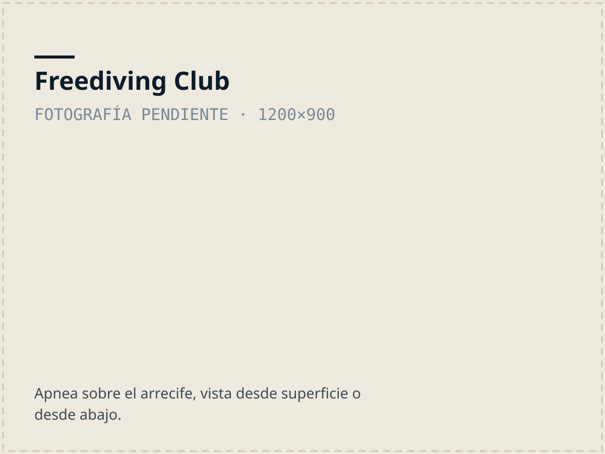

La unidad más nueva
Freediving Club
Es la unidad más nueva de la organización, e igualmente necesaria. El deporte ha experimentado un boom nacional y mundial que necesita de un marco regulatorio y de una enseñanza segura que en el Caribe aún no se da.
Somos una comunidad marina con amplia experiencia en “buceo a pulmón” o apnea. Nuestros pescadores históricamente han “langosteado” y “arbaleteado” nuestros fondos marinos y el Caribe es un destino internacional de buceo y snorkel.
El Freediving Club va a desarrollar el deporte por medio de cursos, talleres y competencias.
